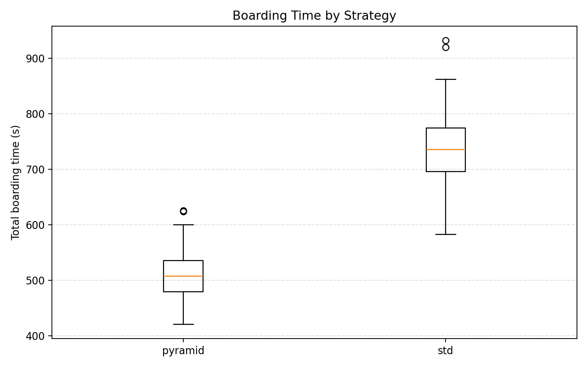
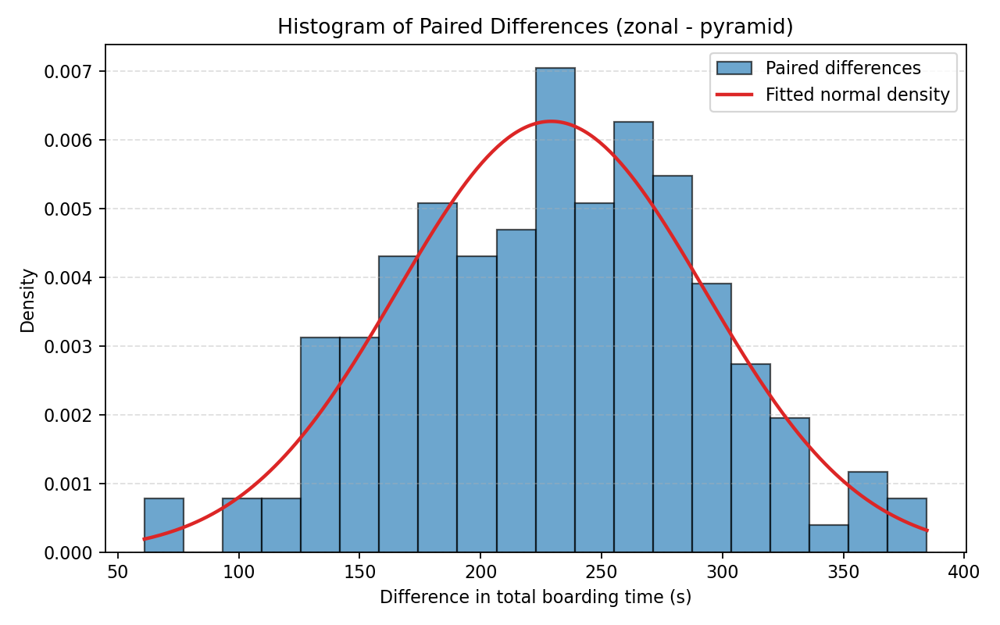
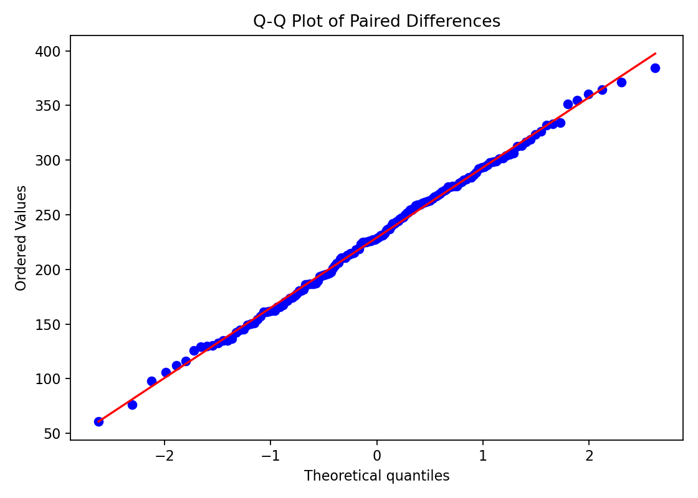

Generated: 2026-04-15 10:28 UTC
| replications | master_seed | load_factor | luggage_probability | cross_zone_violation_rate | paired_runs | completed_pairs | failed_runs |
|---|---|---|---|---|---|---|---|
| 158 | 2.026e+07 | 0.85 | 0.75 | 0.05 | 158 | 158 | 0 |
| strategy | n_completed | mean | std | median | min | q10 | q25 | q75 | q90 | max |
|---|---|---|---|---|---|---|---|---|---|---|
| pyramid | 158 | 509.294 | 41.653 | 507.75 | 420.5 | 452.4 | 479 | 535.5 | 566.1 | 626 |
| std | 158 | 738.475 | 60.879 | 735.75 | 582.5 | 662.85 | 695.625 | 774.75 | 817.75 | 933 |
| n_pairs | mean_paired_difference | mean_relative_improvement | normality_p_value | selected_test | test_statistic | p_value | effect_size_vargha_delaney_A | effect_size_paired_d | ci95_low | ci95_high |
|---|---|---|---|---|---|---|---|---|---|---|
| 158 | 229.18 | 0.307 | one-sided paired t-test (zonal - pyramid > 0) | 45.291 | 2.447e-92 | 1 | 3.603 | 219.185 | 239.175 |
| replication_id | boarding_time_zonal | boarding_time_pyramid | difference | ratio | relative_improvement |
|---|---|---|---|---|---|
| 1 | 768 | 486 | 282 | 0.633 | 0.367 |
| 2 | 843.5 | 545.5 | 298 | 0.647 | 0.353 |
| 3 | 791.5 | 544.5 | 247 | 0.688 | 0.312 |
| 4 | 844 | 509.5 | 334.5 | 0.604 | 0.396 |
| 5 | 735 | 548 | 187 | 0.746 | 0.254 |
| 6 | 696 | 565.5 | 130.5 | 0.812 | 0.188 |
| 7 | 717.5 | 467.5 | 250 | 0.652 | 0.348 |
| 8 | 858.5 | 503.5 | 355 | 0.586 | 0.414 |
| 9 | 651 | 496.5 | 154.5 | 0.763 | 0.237 |
| 10 | 770.5 | 626 | 144.5 | 0.812 | 0.188 |
| 11 | 795.5 | 535.5 | 260 | 0.673 | 0.327 |
| 12 | 726.5 | 545 | 181.5 | 0.75 | 0.25 |


